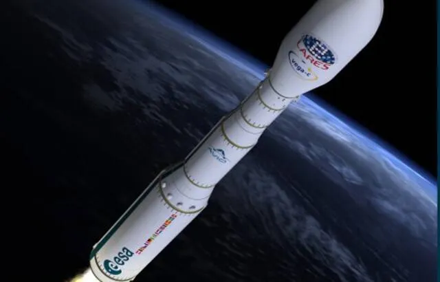

Arianespace : Echec du premier vol commercial de la fusée Vega-C

Le nouveau lanceur léger européen Vega-C, qui devait effectuer son premier vol commercial avec à son bord deux satellites d’Airbus, s’est perdu après son décollage depuis Kourou mardi, un échec qui inflige un revers à une Europe spatiale fragilisée. Dix minutes après le décollage, à 22h47 heure locale, la trajectoire du lanceur a dévié de celle programmée, puis les télémesures ont cessé d’arriver à la salle de contrôle du Centre spatial de Kourou, en Guyane française.
« La mission est perdue », a déclaré le président d’Arianespace, Stéphane Israël, depuis le Centre spatial guyanais. « Environ 2 minutes et 27 secondes après le décollage, une anomalie s’est produite sur le Zefiro 40 », le deuxième étage du lanceur, « mettant ainsi fin à la mission Vega-C », a précisé la société chargée de son exploitation dans un bref communiqué. « Des analyses de données sont en cours pour déterminer les raisons de cet échec », a ajouté Arianespace. Un point presse est prévu mercredi à Kourou, à midi, heure locale.
Arianespace a constaté qu’il n’y avait pas de retombées de débris après le décollage du lanceur européen, sous maîtrise d’oeuvre italienne. La fusée Vega-C devait placer en orbite deux satellites d’observation de la Terre construits par Airbus, Pléiades Neo 5 et 6, les deux derniers de la constellation Pléiades Neo devant permettre d’imager n’importe quel point du globe plusieurs fois par jour avec une résolution de 30 cm.
21/12/22 à 07h31